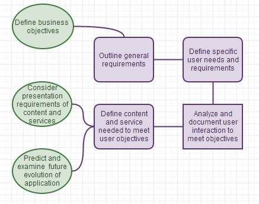

Methodologies are used to structure projects and provide a course that avoids common pitfalls. A well-founded methodology incorporates:
So how can one choose the best methodology? There are several things to consider and they are outlined in the process below:
Methodologies can be classified into three types:
This approach works when there is no major rush to bring the product to the market and when the client has a good understanding of what is needed for the next couple versions. To make the system work, use:
The client knows at least the primary features with only a few requirement changes needed during development, with a moderate rush to bring the product to market.
The client requirements change often throughout development and there is a rush to bring the product to market.
Neubloc uses the Building Blocs Method to incorporate the above and establish successful guidelines for software design and development.